Linux Filesystem at a Glance
IT6_Kernel) chỉ có sẵn source thật của
Linux 5.10.241 (đường dẫn Kernel/K-S800/Src/, xác nhận từ Makefile: VERSION=5 PATCHLEVEL=10 SUBLEVEL=241).
Theo nguyên tắc "ưu tiên source code thật, không bịa", toàn bộ function name / call graph / field struct trong tài liệu này được
verify trực tiếp bằng grep trên source 5.10.241, không phải 5.4.302. Khác biệt đáng chú ý so với 5.4 được đánh dấu bằng box
"⚠ VERSION DIFFERENCE" tại đúng vị trí liên quan (mount API dùng fs_context từ 5.2, do_sys_openat2() wrapper từ 5.6,
address_space_operations.readahead() thay readpages() từ 5.8+, v.v).
VFS (Virtual File System) là lớp trừu tượng trung tâm cho phép Linux hỗ trợ hàng chục filesystem khác nhau
(ext4, xfs, btrfs, tmpfs, procfs, NFS...) đằng sau một tập API thống nhất: open/read/write/close/stat/....
Không có VFS, mỗi syscall sẽ phải biết cách nói chuyện với từng filesystem cụ thể — không thể mở rộng được.
VFS giải quyết bài toán này bằng polymorphism kiểu C: mỗi object (file, inode, dentry, super_block) mang theo
một bảng con trỏ hàm (*_operations) do filesystem cụ thể cài đặt; VFS chỉ gọi qua con trỏ, không biết —
và không cần biết — mình đang nói chuyện với ext4 hay tmpfs.
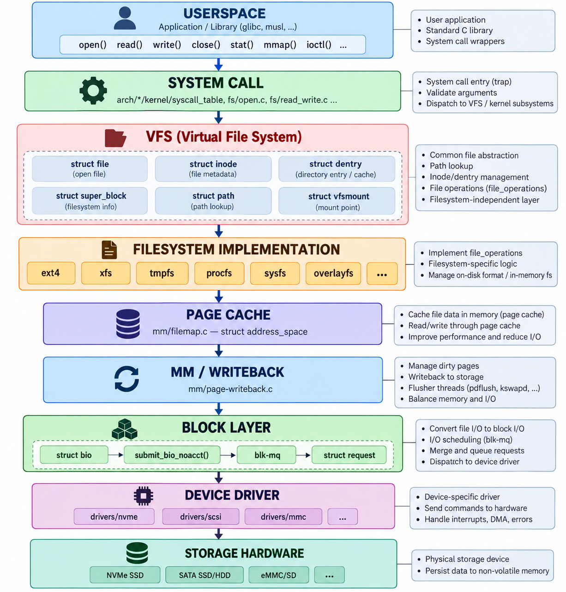
| Layer | Vai trò | Ví dụ source | Không làm gì |
|---|---|---|---|
| SYSCALL | Copy tham số từ user → kernel, validate fd, gọi hàm VFS | fs/open.c, fs/read_write.c | Không biết filesystem cụ thể |
| VFS | Định nghĩa object model chung + pathname resolution + dispatch qua *_operations | fs/namei.c, fs/dcache.c, fs/inode.c | Không biết on-disk layout |
| FILESYSTEM | Cài đặt on-disk layout thật (block group, extent, journal...) hoặc synthetic (procfs sinh dữ liệu từ kernel state) | fs/ext4/*.c | Không biết block device thật sự nằm ở đâu / driver nào |
| PAGE CACHE | Cache nội dung file trong RAM theo đơn vị page, tránh I/O lặp lại | mm/filemap.c | Không biết filesystem semantics (extent, journal) |
| BLOCK LAYER | Gộp/xếp hàng I/O request (bio → request), scheduling (blk-mq) | block/blk-core.c, block/blk-mq.c | Không biết file, inode, filesystem gì cả — chỉ biết sector |
| DRIVER | Dịch request thành lệnh phần cứng thật (NVMe command, SCSI CDB...) | drivers/nvme/host/core.c | Không biết filesystem/VFS |
bio, request). Đây là lý do bạn có thể thay ext4 bằng btrfs, hoặc thay HDD bằng NVMe, mà không phải sửa VFS.
Việc trace một filesystem operation thực chất là việc đi theo chuỗi con trỏ hàm này từ trên xuống dưới.
THIS CHAPTER ENABLES: 02 VFS Architecture
VFS Architecture
VFS không phải là một filesystem — nó không lưu dữ liệu trên disk. Nó là một tập object model + registry sống hoàn toàn trong RAM, đóng vai trò trung gian bắt buộc giữa syscall và filesystem thật. Ba lý do VFS tồn tại:
- Tính đa dạng filesystem — kernel phải hỗ trợ hàng chục filesystem (ext4, xfs, btrfs, vfat, nfs, tmpfs, procfs...) qua một API duy nhất.
- Namespace thống nhất — mọi filesystem được mount vào một cây thư mục duy nhất bắt đầu từ
/, bất kể nó nằm trên disk, RAM, hay mạng. - Cache tập trung — dcache (dentry cache) và inode cache là cơ chế chung cho mọi filesystem, filesystem không phải tự cài lại logic cache pathname.
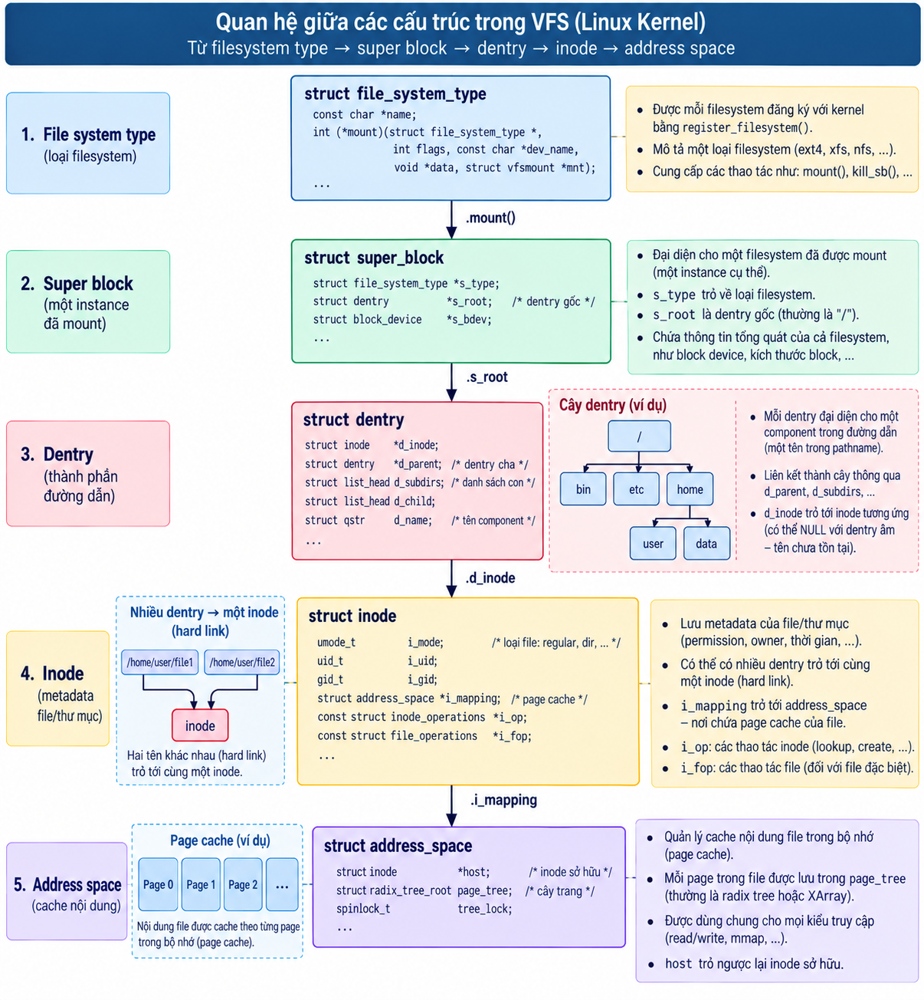
| Object VFS | Đại diện cho | File header |
|---|---|---|
struct file_system_type | Một loại filesystem (vd "ext4") — không phải instance đã mount | include/linux/fs.h |
struct super_block | Một filesystem đã được mount (instance) | include/linux/fs.h |
struct inode | Metadata của một file/dir/device node, độc lập với tên | include/linux/fs.h |
struct dentry | Một pathname component đã resolve, ánh xạ tên → inode | include/linux/dcache.h |
struct file | Một open file instance (fd), giữ vị trí đọc/ghi hiện tại | include/linux/fs.h |
struct address_space | Page cache của một inode | include/linux/fs.h |
struct vfsmount | Một điểm mount trong mount tree | include/linux/mount.h |
file, inode, super_block,
address_space) mang theo một con trỏ tới bảng hàm ảo (f_op, i_op, s_op, a_ops).
Khi VFS gọi file->f_op->read_iter(...), nó đang gọi "virtual method" — implementation thật nằm ở ext4, tmpfs, hay bất kỳ
filesystem nào cài đặt struct file đó.
THIS CHAPTER ENABLES: 03 Core Data Structures, mọi chương sau
Core Data Structures
Đây là bản đồ struct quan trọng nhất trong toàn bộ VFS. Mọi chương sau đều tham chiếu ngược lại chương này.
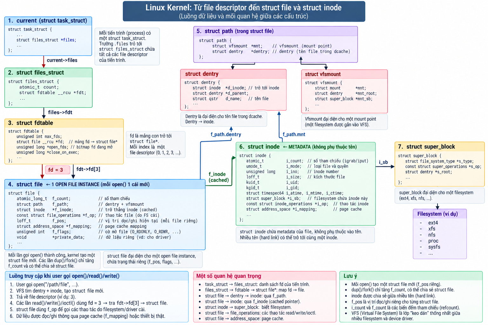
| Object | Purpose | Lifetime | Field quan trọng (verify từ source 5.10.241) |
|---|---|---|---|
struct fileVFS | Một open-file instance — trạng thái riêng của MỘT lần open, không phải của file trên disk | Từ open() tới close()/cuối cùng fput() | f_path, f_inode, f_op, f_pos, f_mode, f_flags, f_count, f_mapping, f_ra (readahead state) |
struct inodeVFS | Metadata của 1 file vật lý — độc lập với tên gọi | Nằm trong inode cache tới khi bị evict (0 dentry alias & 0 reference) | i_mode, i_uid/i_gid, i_ino, i_nlink, i_size, i_op, i_sb, i_mapping, i_state, i_rwsem |
struct dentryVFS | Ánh xạ 1 tên (component pathname) → 1 inode, node trong cây thư mục trong RAM | Sống trong dcache, có thể bị reclaim khi hết reference (LRU) | d_name, d_inode, d_parent, d_sb, d_lockref, d_flags, d_op |
struct pathVFS | Vị trí tuyệt đối trong toàn bộ mount namespace = dentry + mount nó thuộc về | Tham chiếu tạm (đi kèm path_get()/path_put()) | dentry, mnt (include/linux/path.h) |
struct super_blockVFS | Một filesystem instance đã mount | Từ mount tới umount | s_root, s_op, s_type, s_bdev, s_magic, s_maxbytes, s_blocksize |
struct address_spaceMM | Page cache của 1 inode (hoặc của block device) | Gắn với inode/bdev | host, i_pages (xarray chứa page/folio), a_ops, nrpages |
struct file chỉ tồn tại trong RAM khi có tiến trình mở file đó.
Hai open() khác nhau trên cùng một file tạo ra hai struct file khác nhau (hai f_pos độc lập),
nhưng cả hai đều trỏ tới cùng một struct inode.
dentry (nhiều tên, có thể ở nhiều thư mục khác nhau) có thể
cùng trỏ tới một inode (i_nlink > 1). Xem chương 16 unlink().
| So sánh | inode | dentry | file |
|---|---|---|---|
| Đại diện cho | Nội dung + metadata vật lý | Một cái tên trỏ tới inode | Một phiên mở cụ thể |
| Có thể có nhiều instance cho cùng 1 file? | Không (1 file = 1 inode, trừ multi-device) | Có (hard link) | Có (mở nhiều lần) |
| Còn tồn tại khi unlink hết tên? | Tồn tại tới khi i_nlink==0 && i_count==0 | Bị gỡ (negative hoặc unhashed) | Vẫn hoạt động bình thường nếu đang mở |
Có f_pos (offset đọc/ghi)? | Không | Không | Có |
| Cache tương ứng | inode cache | dentry cache (dcache) | không cache riêng — sống theo fd |
THIS CHAPTER ENABLES: 04–09
File Descriptor
Một fd (file descriptor, số nguyên nhỏ) là chỉ số vào một mảng riêng của process, KHÔNG phải con trỏ vào struct file trực tiếp
— lớp gián tiếp này cho phép mỗi process có bảng fd độc lập trong khi vẫn share cùng struct file nếu dup()/fork().
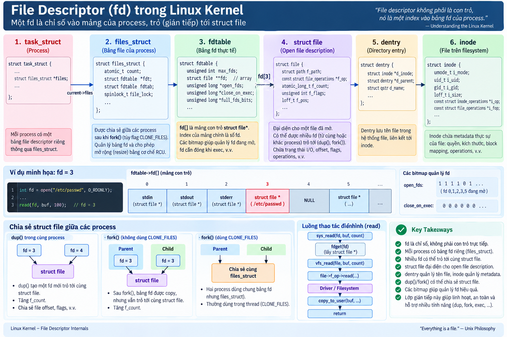
- Purpose
- Tìm 1 slot trống trong
fdtablecủa process hiện tại, đánh dấu đã dùng trongopen_fdsbitmap, KHÔNG gắnstruct filevào — chỉ "đặt chỗ". - Caller
do_sys_openat2()(fs/open.c) — gọi trước khi path lookup hoàn tất, để tránh leak fd nếu bị lỗi giữa chừng.- Callee
alloc_fd()- Output
- Số fd >= 0, hoặc -EMFILE nếu vượt
RLIMIT_NOFILE. - Next step
do_filp_open()để lấystruct file*thật, sau đófd_install().
- Purpose
- Gắn
struct file*đã mở thành công vào slot fd đã đượcget_unused_fd_flags()đặt chỗ trước đó — publish nó cho userspace thấy quafd. - Caller
do_sys_openat2(), sau khido_filp_open()trả về thành công.- Reference counting
- Không tăng refcount thêm —
struct filevừa alloc đã có refcount 1, giờ chuyển quyền sở hữu (ownership transfer) cho fdtable.
- Purpose
fget(fd): trafdtabletheo fd, tăngf_count, trả vềstruct file*an toàn dùng ngoài giữ fd lock (dùng bởi mọi syscall thao tác trên fd: read/write/ioctl/...).fput(file): giảmf_count, nếu về 0 thì free quafile_free()(RCU-delayed).- Locking
fget()dùng RCU read-side +atomic_long_inc_not_zero()để tránh race vớiclose()đang giải phóng file ở CPU khác.- Reference counting
f_countlàatomic_long_t— tăng ở mọifget()/dup(), giảm ở mọifput()/close(). Khi về 0: gọif_op->release(), giải phóng dentry/mnt reference quapath_put().
open() → get_unused_fd_flags() [đặt chỗ số fd, chưa có file] → do_filp_open() [tạo struct file, f_count=1] → fd_install(fd, file) [gắn file vào slot fd] → trả fd cho userspace ... read(fd,...)/write(fd,...) → fdget()/fget_light() [tăng f_count tạm thời hoặc mượn RCU] → dùng file->f_op->... → fdput() [trả lại, không nhất thiết giảm f_count nếu dùng light variant] ... close(fd) → __close_fd() → filp_close() → fput(file) → nếu f_count về 0: f_op->flush(), f_op->release(), dput(dentry), mntput(mnt), file_free()
| fd vs file vs inode | fd | struct file | struct inode |
|---|---|---|---|
| Scope | Riêng từng process (per-fdtable) | Riêng từng lần open() (có thể share qua dup/fork) | Global trong kernel, share qua mọi opener |
| Chứa gì | Chỉ 1 số nguyên (index) | f_pos, f_flags, f_op | Metadata vật lý của file |
Pathname Lookup
Đây là cơ chế biến một chuỗi ký tự như "/home/user/test.txt" thành struct path { dentry, vfsmount }.
Kernel đi qua từng component (home, user, test.txt) một, mỗi bước tra dcache trước — chỉ chạm filesystem thật khi cache miss.
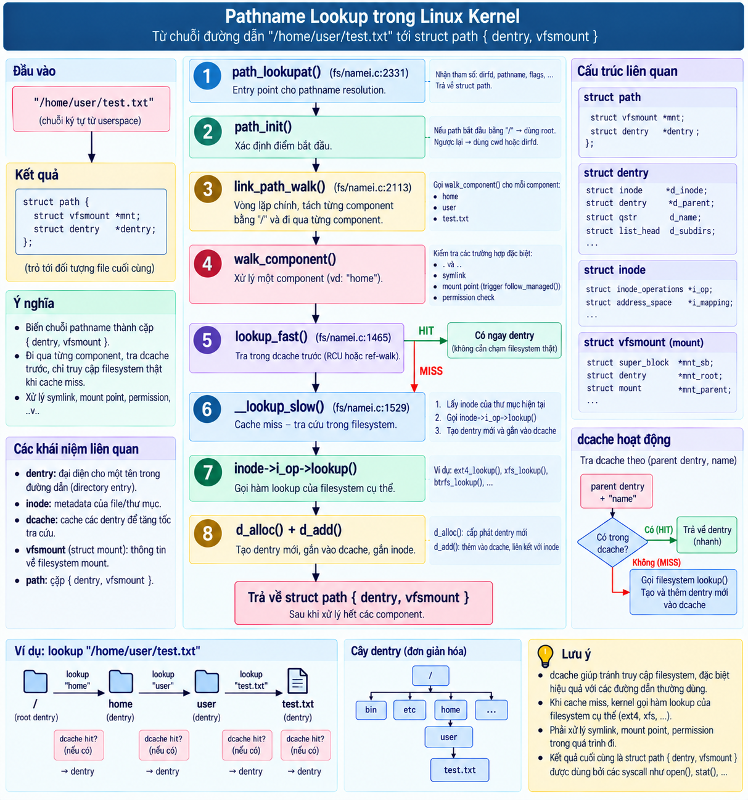
- Purpose
- Duyệt toàn bộ pathname, tách theo
/, gọiwalk_component()cho từng phần trừ phần cuối cùng (last component được xử lý riêng tuỳ flagLOOKUP_PARENT). - Caller
path_lookupat(),path_openat(),path_mountpoint().- Callee
walk_component()→lookup_fast()/__lookup_slow(); xử lý.,..; theo symlink quaget_link().- Important structs
struct nameidata— mang trạng thái duyệt hiện tại (path hiện tại, depth symlink, flags).- Locking
- Ưu tiên chạy trong RCU-walk mode (không lock, không tăng refcount — nhanh); rơi về ref-walk mode (có lock, có refcount) khi gặp trường hợp không an toàn cho RCU (vd cần block, cần theo symlink phức tạp).
- Error paths
-ENOENT(component không tồn tại),-ENOTDIR(component giữa đường không phải thư mục),-ELOOP(quá nhiều symlink — giới hạnMAXSYMLINKS).- Next step
- Component cuối cùng → trả về
struct pathhoàn chỉnh cho caller (vdpath_openat()).
- Purpose
- Tra dcache cho 1 component, cố gắng tìm dentry đã có sẵn trong RAM — đường đi nhanh (fast path), không chạm filesystem.
- Callee
__d_lookup_rcu()(RCU-walk) hoặc__d_lookup()(ref-walk) — xem chương 06.- Output
- Dentry nếu hit (có thể là negative dentry — biết chắc file không tồn tại, cũng là 1 dạng "hit");
NULL/lỗi nếu miss. - Next step
- Hit → dùng ngay dentry đó, tiếp tục component kế. Miss →
__lookup_slow().
- Purpose
- Dcache miss — phải hỏi filesystem thật: có tên component này trong thư mục cha không?
- Callee
parent_inode->i_op->lookup(dir, dentry, flags)— vdext4_lookup()đọc directory block/htree trên disk (qua page cache/buffer cache), tìm entry khớp tên, rồiiget_locked()nạp/tạo inode tương ứng.- Important structs
- Tạo
struct dentrymới (negative trước, rồid_add()gắn inode nếu tìm thấy) quad_alloc_parallel(). - Locking
inode->i_rwsem(đọc) trên thư mục cha để tránh race với create/unlink song song.- Next step
- Dentry mới được
d_add()vào dcache — lần lookup sau cùng tên sẽ hit fast path.
path_init() chọn điểm bắt đầu: bắt đầu bằng / → task->fs->root; ngược lại → task->fs->pwd (cwd) hoặc dfd (với *at() syscalls như openat). chdir() chỉ đổi fs->pwd, không đổi filesystem thật.
S_ISLNK) chứa chuỗi path đích — get_link() trả về path đó, link_path_walk() lặp lại resolution trên path mới. Hard link: không có inode riêng — chỉ là một dentry/tên khác trỏ vào cùng inode (i_nlink++). Xem 16 unlink().
struct path { dentry, vfsmount }, vì trên đường đi có thể
băng qua ranh giới mount (vd /home là 1 mount point riêng). path_init()/link_path_walk() tự động
"nhảy" qua mount point (follow_mount()), nên với người dùng, cây thư mục trông liền mạch dù thực chất là nhiều filesystem ghép lại.
Dentry & Dcache
Dcache là bảng hash toàn cục ánh xạ (parent dentry, tên) → dentry, giúp tránh phải hỏi lại filesystem
mỗi lần resolve cùng một pathname. Không có dcache, MỖI lần open() đều phải đọc directory block từ disk — cực kỳ chậm.
- Purpose
- Tra bảng hash dcache toàn cục theo
(parent, qstr name), trả về dentry nếu có, tăng reference count của nó. - Locking
__d_lookup()dùngrcu_read_lock()để duyệt hash chain không khoá, chỉ lock (dentry->d_lockref.lock) đúng candidate để verify tên khớp và tăng refcount an toàn (seqlock retry nếu bị race).- Output
- Dentry với refcount +1 (caller phải
dput()sau khi dùng xong), hoặcNULL.
- Purpose
- Cấp phát 1
struct dentrymới (chưa có inode — "negative"), gắn vàod_parent->d_subdirs.d_alloc_parallel()còn xử lý trường hợp nhiều thread cùng lookup 1 tên song song (in-lookup hash) để không tạo trùng. - Caller
__lookup_slow()khi dcache miss.
- Purpose
- Gắn
inodevào 1 dentry vừa alloc (biến negative dentry thành positive) —d_instantiate()thêm dentry vàoinode->i_dentryalias list;d_add()=d_instantiate()+ rehash vào bảng hash toàn cục để lookup sau tìm thấy. - Caller
- Filesystem's
->lookup(),->create(),->mkdir(), sau khi gọiiget_locked()/tạo inode mới.
- Purpose
- Giảm reference count của dentry. Về 0 → KHÔNG free ngay — đưa vào LRU list để có thể tái sử dụng nếu lookup lại sớm (đây là lý do dcache "nhanh" ngay cả sau khi không còn ai giữ reference).
- Reference counting
d_lockref(kết hợp spinlock + count, tối ưu hoá bằng cmpxchg cho trường hợp không tranh chấp).- Next step
- Dưới áp lực bộ nhớ, shrinker (
prune_dcache_sb()) sẽ evict dentry ở cuối LRU → gọiiput()trên inode liên quan.
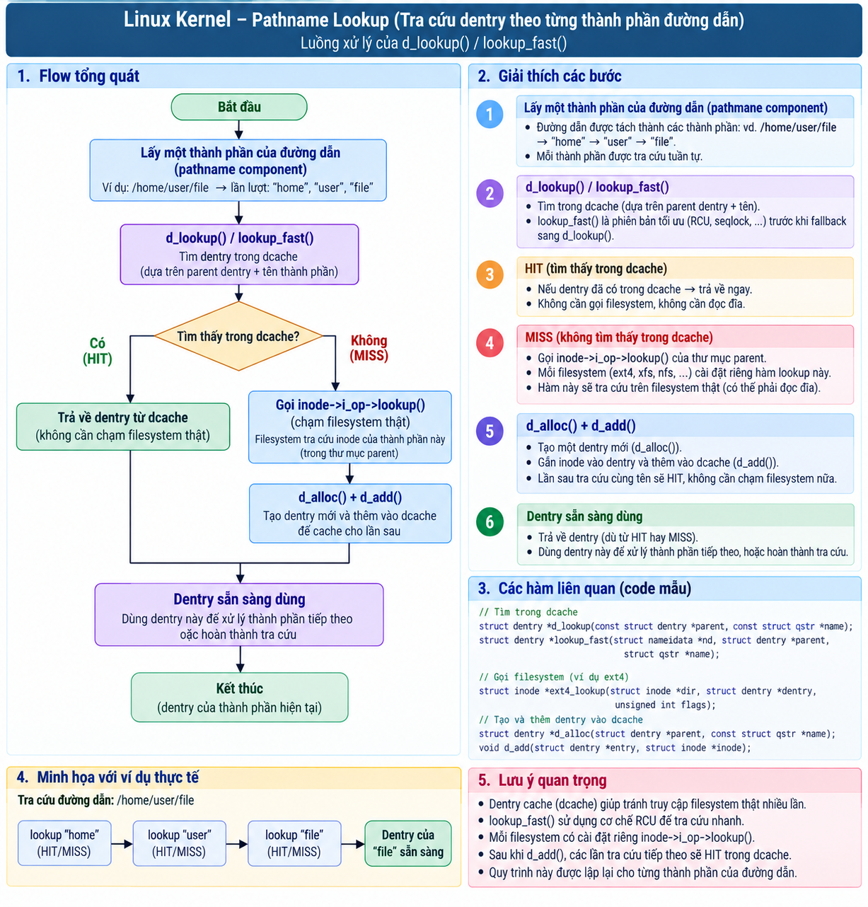
| 3 loại cache dễ nhầm | dentry cache (dcache) | inode cache | page cache |
|---|---|---|---|
| Cache cái gì | Ánh xạ tên → inode | Metadata inode (không cần đọc lại từ disk) | Nội dung file (data bytes) |
| Key | (parent dentry, tên) | (super_block, số inode) | (address_space, page index) |
| Struct | struct dentry | struct inode | struct page/folio trong i_pages |
| Hit tránh được gì | Đọc lại directory block | Đọc lại inode table trên disk | Đọc lại data block trên disk |
open("/tmp/khong_co.txt") thất bại, kernel tạo 1 negative dentry
(d_inode == NULL). Lần open() sau cùng tên sẽ hit ngay ở dcache và trả -ENOENT mà KHÔNG cần hỏi lại filesystem.
Inode
struct inode là "sự thật" về một file — mọi thứ ngoại trừ tên của nó. Field xác nhận từ include/linux/fs.h:617:
i_mode, i_uid/i_gid, i_op, i_sb, i_mapping, i_ino, i_nlink (chỉ đọc trực tiếp — sửa qua
set_nlink()/inc_nlink()/drop_nlink()), i_rdev, i_size, i_atime/i_mtime/i_ctime, i_blocks, i_state, i_rwsem.
- Purpose
- Tra inode cache theo
(super_block, ino). Có sẵn → trả về (tăngi_count). Chưa có → cấp phát inode mới ở trạng tháiI_NEW(khoá), trả về để filesystem tự điền field từ on-disk inode. - Caller
- Filesystem's
->lookup()(vdext4_iget()gọi quaiget_locked()). - Callee
alloc_inode()→sb->s_op->alloc_inode()(cho phép fs cấp phát struct lớn hơn bọc lấystruct inode, vdext4_inode_info).- Next step
- Nếu inode mới: filesystem điền field từ disk rồi gọi
unlock_new_inode()để bỏ cờI_NEW, các lookup khác đang chờ được đánh thức.
- Purpose
- Giảm
i_count. Về 0: nếui_nlink == 0(đã bị unlink hết tên) → gọievict()ngay để xoá cả metadata lẫn dữ liệu trên disk; nếu còni_nlink > 0→ giữ trong inode cache (LRU) để tái dùng. - Callee
evict()(fs/inode.c:589) →sb->s_op->evict_inode()(vdext4_evict_inode()giải phóng block thật, ghi transaction giải phóng vào JBD2).- Next step
evict()xong →destroy_inode()free vùng nhớ struct inode.
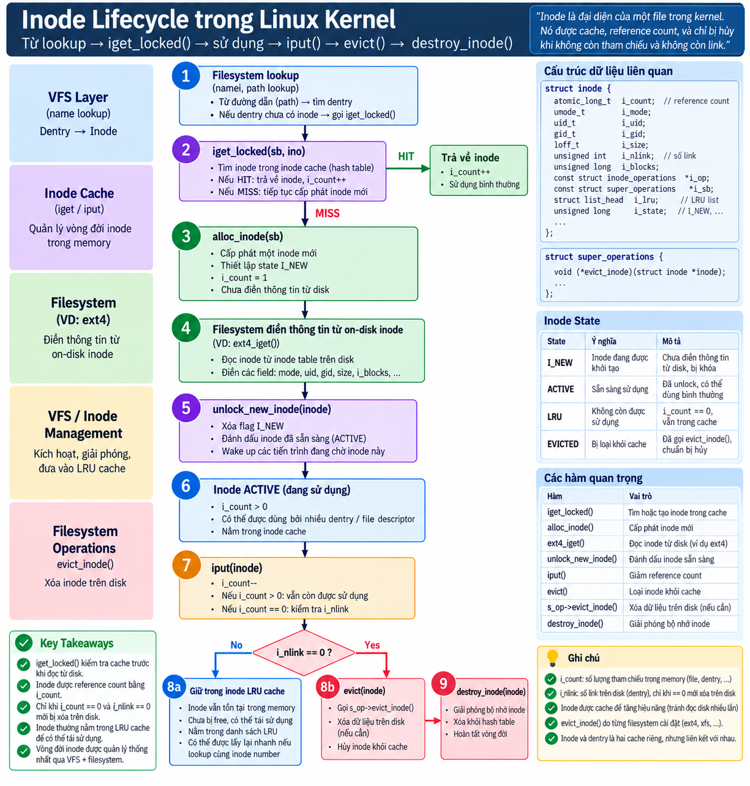
i_ino. Định danh thật sự duy nhất là cặp (st_dev, st_ino).
Superblock & Mount
file_system_type->mount() gọi trực tiếp theo kiểu cũ mà đi qua
struct fs_context (RFC "new mount API", fs_context_for_mount() → vfs_get_tree()). Đây chính là những gì
verify được trong 5.10.241 (fs/namespace.c:994, 2976, 2997). Tài liệu về Linux 5.4 sớm mô tả API cũ
(get_sb()/mount() trả trực tiếp dentry*) vẫn còn tương thích ở 5.4, nhưng 5.10 đã dùng cơ chế context-based này.
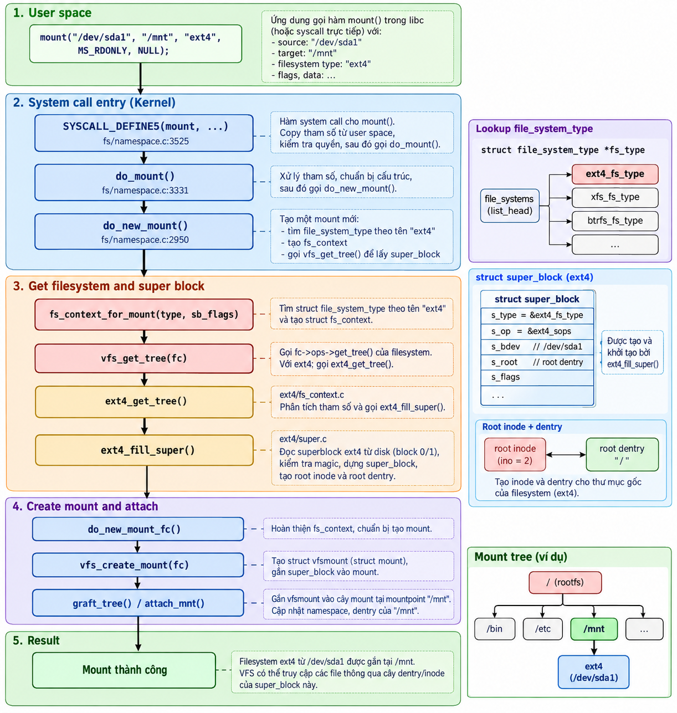
| Struct | Vai trò |
|---|---|
struct file_system_type | Đăng ký 1 filesystem driver (vd ext4) — có .name, .init_fs_context/.mount, đăng ký qua register_filesystem() |
struct fs_context | (kernel mới) Gói tham số mount lại + trạng thái trong quá trình dựng super_block, thay cho việc truyền tham số rời rạc |
struct super_block | 1 filesystem instance đã mount, có s_root trỏ dentry gốc |
struct vfsmount | 1 điểm gắn (mount point) trong mount tree — 1 super_block có thể được mount ở NHIỀU nơi (bind mount) → nhiều vfsmount cùng trỏ 1 super_block |
| mount namespace | Toàn bộ mount tree của 1 process/container (struct mnt_namespace) — cho phép container thấy cây mount khác nhau |
struct path = {dentry, vfsmount} chứ không chỉ dentry, chính vì 1 super_block/dentry có thể được nhìn thấy
qua nhiều mount điểm khác nhau (bind mount). VFS cần biết "đang đứng ở mount nào" để resolve đúng .. khi đi qua ranh giới mount.
File Operations — Bảng hàm ảo
4 bảng "virtual method table" điều khiển toàn bộ hành vi của một filesystem. Field verify từ
include/linux/fs.h (5.10.241).
// include/linux/fs.h — struct file_operations (trích)
struct file_operations {
ssize_t (*read_iter)(struct kiocb *, struct iov_iter *);
ssize_t (*write_iter)(struct kiocb *, struct iov_iter *);
int (*iterate_shared)(struct file *, struct dir_context *);
__poll_t (*poll)(struct file *, struct poll_table_struct *);
long (*unlocked_ioctl)(struct file *, unsigned int, unsigned long);
int (*mmap)(struct file *, struct vm_area_struct *);
int (*open)(struct inode *, struct file *);
int (*release)(struct inode *, struct file *);
int (*fsync)(struct file *, loff_t, loff_t, int datasync);
...
};// include/linux/fs.h — struct inode_operations (trích)
struct inode_operations {
struct dentry *(*lookup)(struct inode *, struct dentry *, unsigned int);
int (*create)(struct inode *, struct dentry *, umode_t, bool);
int (*link)(struct dentry *, struct inode *, struct dentry *);
int (*unlink)(struct inode *, struct dentry *);
int (*mkdir)(struct inode *, struct dentry *, umode_t);
int (*rmdir)(struct inode *, struct dentry *);
int (*rename)(struct inode *, struct dentry *,
struct inode *, struct dentry *, unsigned int);
int (*getattr)(const struct path *, struct kstat *, u32, unsigned int);
...
};// struct super_operations (trích)
struct super_operations {
struct inode *(*alloc_inode)(struct super_block *);
void (*destroy_inode)(struct inode *);
int (*write_inode)(struct inode *, struct writeback_control *);
void (*evict_inode)(struct inode *);
void (*put_super)(struct super_block *);
int (*sync_fs)(struct super_block *, int wait);
int (*statfs)(struct dentry *, struct kstatfs *);
};// struct address_space_operations (trích, 5.10 có cả readpages CŨ và readahead MỚI)
struct address_space_operations {
int (*readpage)(struct file *, struct page *);
int (*readpages)(struct file *, struct address_space *,
struct list_head *, unsigned nr_pages); // legacy
void (*readahead)(struct readahead_control *); // mới, 5.8+
int (*writepage)(struct page *, struct writeback_control *);
int (*writepages)(struct address_space *, struct writeback_control *);
int (*write_begin)(...); int (*write_end)(...);
int (*direct_IO)(struct kiocb *, struct iov_iter *);
};readahead() (nhận struct readahead_control*, xử lý nhiều trang cùng lúc hiệu quả hơn) được thêm ở 5.8, dần thay thế
readpages(). 5.10.241 có cả 2 hook trong struct nhưng ext4 (fs/ext4/inode.c:3328) đã dùng
ext4_mpage_readpages() gọi qua đường readahead-style path. Trên 5.4, chỉ có readpages().
Ví dụ thực tế từ ext4 (đã verify bằng grep):
| Table | ext4 instance | File | Hàm quan trọng |
|---|---|---|---|
file_operations | ext4_file_operations | fs/ext4/file.c:1133 | ext4_file_read_iter, ext4_file_write_iter, ext4_file_mmap |
inode_operations (file) | ext4_file_inode_operations | fs/ext4/file.c:1156 | ext4_setattr, ext4_getattr |
inode_operations (dir) | ext4_dir_inode_operations | fs/ext4/namei.c:4282 | ext4_create, ext4_lookup, ext4_unlink, ext4_mkdir, ext4_rename2 |
super_operations | ext4_sops | fs/ext4/super.c | ext4_alloc_inode, ext4_evict_inode, ext4_sync_fs |
openat() — Full Source Trace
openat2()/do_sys_openat2() (từ 5.6, syscall mở rộng an toàn hơn openat, chống symlink-attack
qua struct open_how). open()/openat() classic vẫn tồn tại và gọi vào cùng do_sys_openat2() nội bộ
(fs/open.c:1245 do_sys_open() → do_sys_openat2()) — verify trực tiếp từ source.
USERSPACE: fd = open("/home/test.txt", O_RDONLY);
│
▼
SYSCALL_DEFINE3(open, filename, flags, mode) fs/open.c:1252 [SYSCALL]
│
▼
do_sys_open(AT_FDCWD, filename, flags, mode) fs/open.c:1245 [SYSCALL]
│
▼
do_sys_openat2(dfd, filename, &open_how) fs/open.c:1216 [SYSCALL]
│
├── build_open_flags(how, &op) fs/open.c:1040 [SYSCALL] dịch O_* → struct open_flags
├── getname(filename) [SYSCALL] copy pathname từ userspace
├── get_unused_fd_flags(how->flags) fs/file.c [VFS] đặt chỗ fd — xem ch.04
│
▼
do_filp_open(dfd, pathname, &op) fs/namei.c:3444 [VFS]
│
▼
path_openat(&nd, op, flags) fs/namei.c:3405 [VFS]
│
├── path_init() [VFS] điểm bắt đầu (root/cwd/dfd)
├── link_path_walk() fs/namei.c:2113 [VFS] resolve tới thư mục cha — xem ch.05
├── lookup_open() / do_last() [VFS] resolve component cuối, xử lý O_CREAT
│ │
│ ├── nếu O_CREAT và chưa tồn tại → inode->i_op->create() [FS] vd ext4_create() — xem ch.15
│ └── permission check: inode_permission() [VFS]
│
▼
vfs_open(path, file) [VFS]
│
▼
do_dentry_open(file, inode, NULL) [VFS]
│
├── file->f_op = inode->i_fop (gắn bảng hàm ext4_file_operations) [FS]
├── file->f_mapping = inode->i_mapping
└── file->f_op->open(inode, file) (nếu fs cài, vd ext4_file_open()) [FS]
│
▼
struct file* hoàn chỉnh, trả về do_sys_openat2()
│
▼
fd_install(fd, file) fs/file.c [SYSCALL]
│
▼
return fd; ──────────────────────────────────────────────────────► USERSPACE
- Purpose
- Điểm vào chung cho mọi mở file có pathname (kể cả nội bộ kernel, không chỉ syscall) — thiết lập
nameidata, retry nếu path walk gặp race (báo-ECHILD/cần rơi về ref-walk). - Input
dfd(base fd cho relative path),struct filename *pathname,struct open_flags *op(đã dịch từ O_* flags).- Callee
path_openat()— có thể gọi lại tối đa vài lần nếu RCU-walk thất bại giữa chừng (LOOKUP_REVALretry loop).- Output
struct file*đã mở hoàn chỉnh, hoặcERR_PTR(-Exxx).- Error paths
-ENOENT,-EACCES(permission),-EEXIST(O_CREAT|O_EXCL trên file đã có),-ELOOP.
- Purpose
- Toàn bộ logic mở 1 file theo path: resolve thư mục cha, xử lý component cuối (tạo mới nếu O_CREAT, mở nếu đã tồn tại), cấp phát
struct file, gọi vào filesystem để hoàn tất open. - Callee
alloc_empty_file()(cấp phátstruct filetrống),link_path_walk(),do_last()(nội bộ: xử lý atomic_open nếu fs hỗ trợ — 1 lần gọi filesystem vừa lookup vừa create, tránh TOCTOU),vfs_open().- Important structs
struct nameidata nd(trạng thái duyệt),struct path(kết quả).- Next step
vfs_open()→do_dentry_open().
- Purpose
- Gắn
struct filevào dentry/inode đã resolve: copyinode->i_fopvàofile->f_op, setf_mapping = inode->i_mapping, gọif_op->open()nếu filesystem có cài (cơ hội cuối để fs làm việc riêng, vd kiểm tra thêm hoặc khởi tạoprivate_data). - Important structs
- Đây là điểm nối chính thức giữa VFS generic và filesystem cụ thể: từ đây trở đi mọi
read()/write()trênfdnày sẽ đi quafile->f_opcủa ext4/tmpfs/... - Reference counting
- Nếu
f_op->open()thất bại: rollback —fput_light/giải phóng file, giảm reference dentry/inode đã lấy.
open() có 2 việc hoàn toàn tách biệt: (1) tìm/tạo object đích trong cây filesystem — việc của
path_openat/pathname lookup (ch.05); (2) khởi tạo phiên làm việc (struct file) trên object đó — việc của
do_dentry_open. Việc 1 có thể re-dùng dcache; việc 2 luôn tạo struct file mới, không cache.
Bảng: mỗi hàm thuộc layer nào
| Function | Layer | File |
|---|---|---|
SYSCALL_DEFINE3(open,...), do_sys_open(), do_sys_openat2(), build_open_flags(), get_unused_fd_flags(), fd_install() | SYSCALL glue | fs/open.c |
do_filp_open(), path_openat(), link_path_walk(), vfs_open(), do_dentry_open() | VFS | fs/namei.c, fs/open.c |
inode->i_op->create() = ext4_create(), file->f_op->open() | FILESYSTEM | fs/ext4/namei.c, fs/ext4/file.c |
- Tại sao
open()phải giữ cảdentrylẫnvfsmounttrongstruct file(quaf_path), không chỉ dentry? O_CREAT|O_EXCLphải atomic — kernel đảm bảo điều này ở đâu, bằng cách nào (gợi ý:i_rwsemtrên thư mục cha, hoặc->atomic_open())?- Sự khác biệt giữa RCU-walk và ref-walk trong
path_openat, và khi nào phải fallback?
read() — Full Source Trace
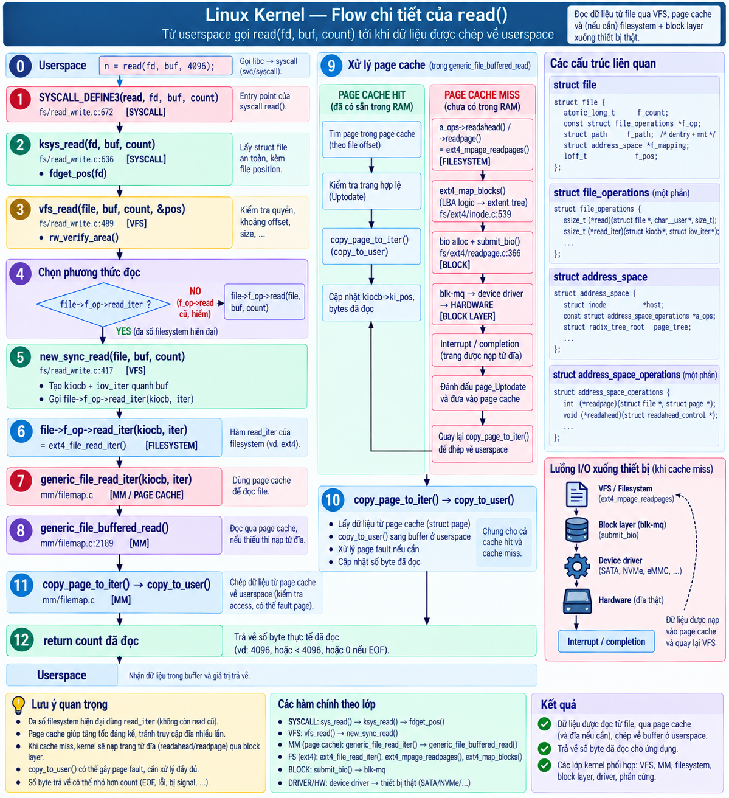
- Purpose
- Điểm vào chung cho mọi read có buffer đơn (không phải readv), validate quyền đọc (
FMODE_READ), gọi vào filesystem-specific read path. - Callee
rw_verify_area(); sau đófile->f_op->read()nếu có, elsenew_sync_read()wrapread_iter.- Locking
- Không tự lock gì thêm — filesystem tự quản lý lock trên inode (vd ext4 dùng
i_rwsemở chế độ đọc cho phép nhiều reader song song).
- Purpose
- Đây là "trái tim" của read: với mỗi trang trong khoảng offset cần đọc, tra
address_space->i_pages(xarray) xem trang đã có trong page cache chưa. - Data flow
- HIT: kiểm tra
PageUptodate, nếu có → copy thẳng. MISS/not-uptodate: kích hoạt readahead (page_cache_sync_readahead()/ondemand_readahead()) rồi gọia_ops->readahead()hoặc->readpage()của filesystem, block chờ I/O hoàn tất (wait_on_page_locked()), rồi mới copy. - Important structs
struct page/folio trongaddress_space->i_pages;struct file_ra_state(trongstruct file) lưu trạng thái readahead (điều chỉnh kích thước prefetch theo pattern truy cập tuần tự/ngẫu nhiên).- Next step
copy_page_to_iter()đưa dữ liệu raiov_iterđích (thường là user buffer quacopy_to_user).
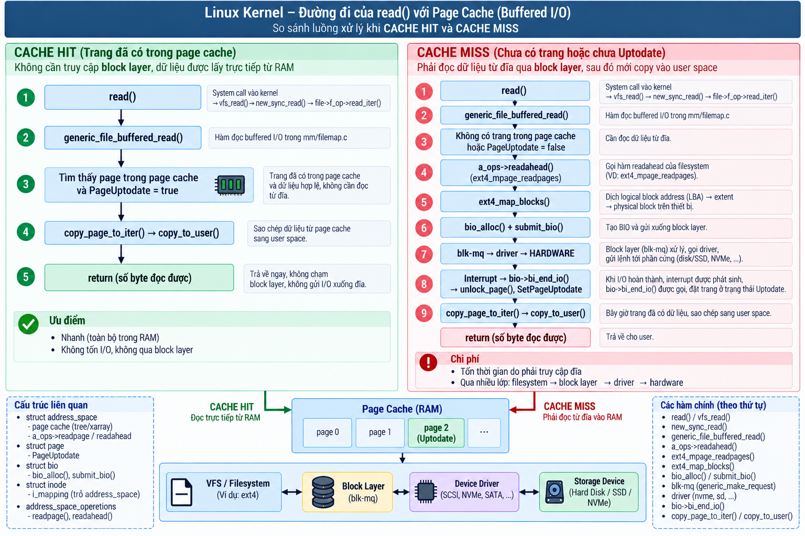
read() KHÔNG bao giờ chạm tới block layer/driver/hardware — toàn bộ thời gian nằm trong
generic_file_buffered_read() đọc RAM. Đây là lý do đọc file lần 2 luôn nhanh hơn lần đầu rất nhiều — không phải vì
disk "nhớ", mà vì Linux giữ nguyên page trong RAM cho tới khi bị reclaim.
write() — Full Source Trace
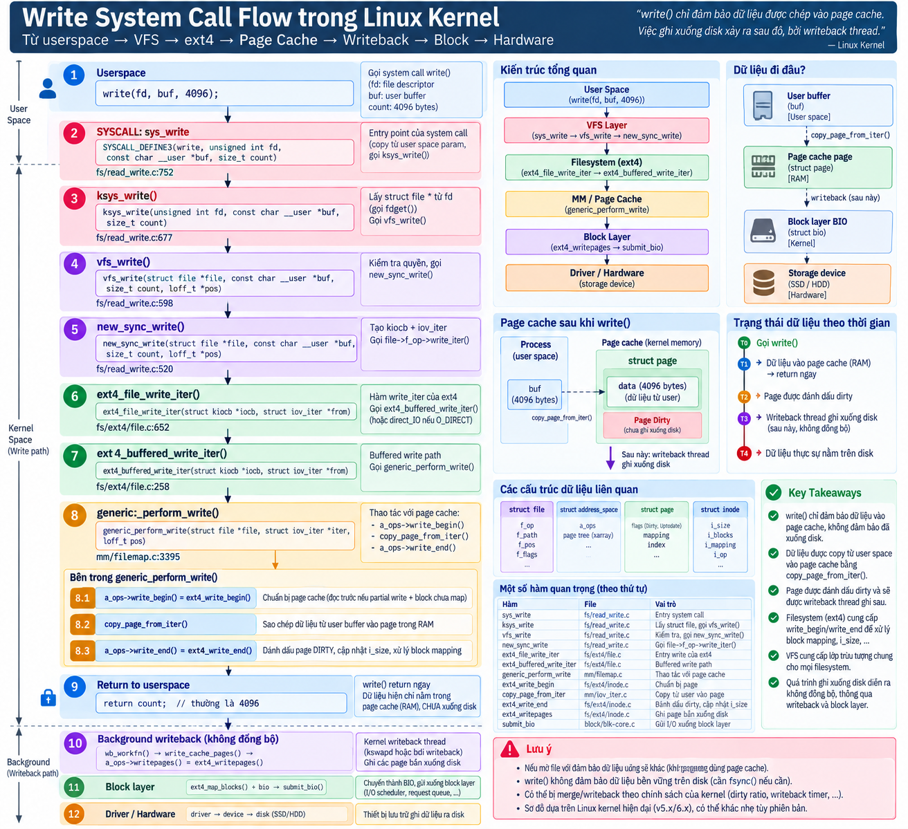
- Purpose
- Vòng lặp copy dữ liệu từ user buffer vào page cache theo từng "chunk" khớp page boundary, uỷ quyền cho filesystem chuẩn bị/kết thúc mỗi page qua
write_begin/write_end— đây là nơi filesystem có cơ hội chèn logic riêng (ext4: đảm bảo block đã được map/allocate, có thể mở transaction JBD2 nếu cần). - Callee
a_ops->write_begin(),copy_page_from_iter_atomic(),a_ops->write_end(),balance_dirty_pages_ratelimited()(throttle writer nếu quá nhiều dirty page tích luỹ — xem ch.21).- Data flow
- Dữ liệu: user buffer → page trong
address_space->i_pages(RAM). KHÔNG có I/O disk nào xảy ra trong hàm này. - Next step
- Page được đánh dấu
PageDirty— sẽ được writeback thread ghi xuống sau (ch.21), hoặc ghi ngay nếu caller mở vớiO_SYNC/gọifsync()sau.
write() mặc định (không có O_SYNC/O_DIRECT)
chỉ đảm bảo dữ liệu đã nằm trong page cache (RAM) và đã đánh dấu dirty. Nếu mất điện ngay sau đó, dữ liệu này CÓ THỂ MẤT.
Để đảm bảo dữ liệu thật sự trên disk, phải gọi fsync() hoặc mở file với O_SYNC.
| API | Đảm bảo gì | Chi phí |
|---|---|---|
write() | Dữ liệu vào page cache (RAM), đánh dấu dirty | Rẻ — không I/O đồng bộ |
fsync(fd) | Toàn bộ dirty page + metadata của file này đã ghi + flush cache của device | Đắt — chờ I/O thật |
fdatasync(fd) | Giống fsync nhưng có thể bỏ qua metadata không ảnh hưởng đọc lại (vd mtime) | Rẻ hơn fsync một chút |
sync() | Toàn bộ dirty page + inode của MỌI filesystem đã mount | Đắt nhất, ảnh hưởng toàn hệ thống |
mmap()
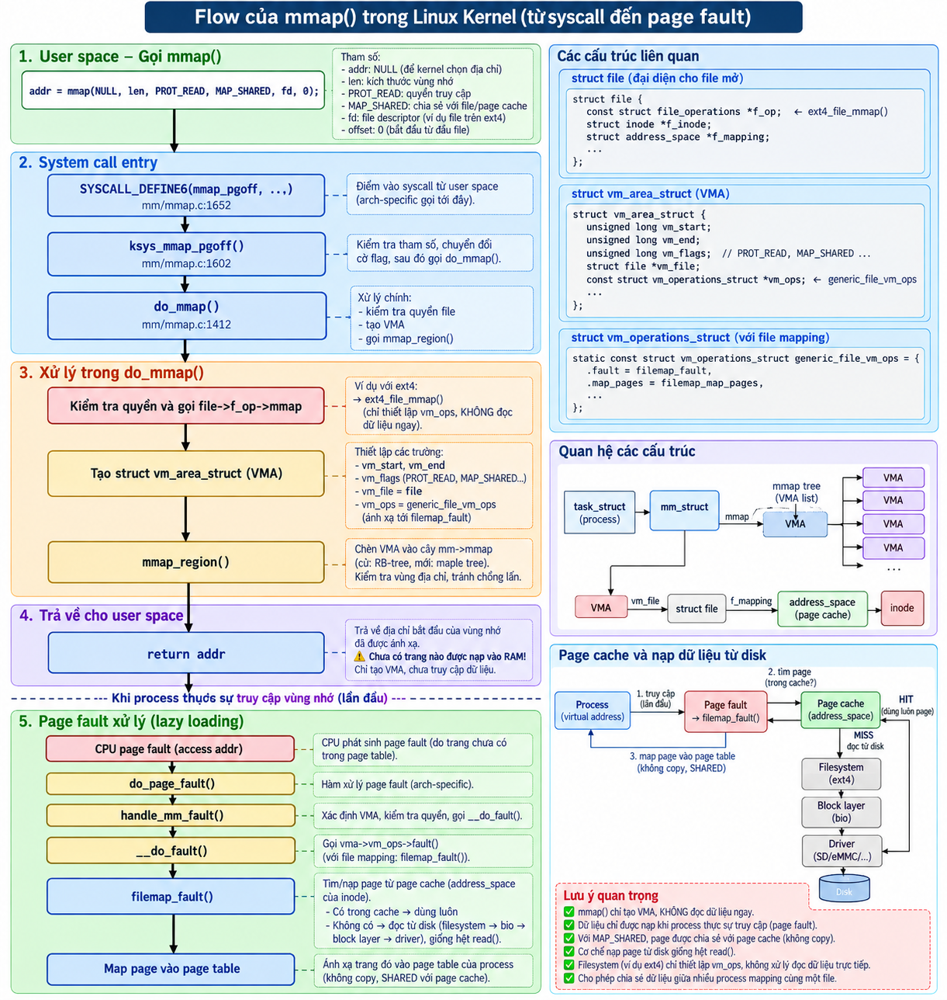
mmap() KHÔNG đọc file ngay lập tức — nó chỉ tạo một ánh xạ địa chỉ ảo (VMA) và đăng ký "khi fault vào vùng này thì gọi hàm nào".
Dữ liệu chỉ thật sự được nạp (qua đúng con đường page cache như read()) khi CPU sinh page fault lần đầu chạm vào trang đó — đây
gọi là lazy loading. Với MAP_SHARED, trang trong bộ nhớ của process CHÍNH LÀ trang trong page cache — ghi vào vùng mmap này
tương đương ghi trực tiếp vào page cache (giống hiệu ứng write(), cũng cần msync()/writeback để xuống disk thật).
ioctl()
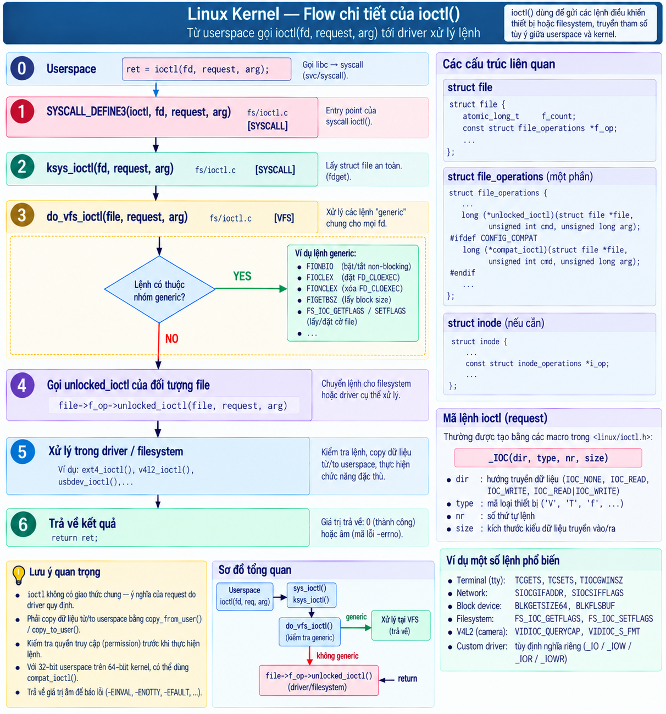
Khác biệt cốt lõi so với read/write: ioctl không có API thống nhất — mỗi filesystem/driver tự định nghĩa
cmd nào làm gì. VFS chỉ generic hoá một tập lệnh rất nhỏ (thao tác trên fd nói chung), phần còn lại đi thẳng xuống
f_op->unlocked_ioctl mà VFS không biết ý nghĩa của cmd/arg.
FS_IOC_GETFLAGS lấy cờ
immutable/append-only của ext4) rất an toàn và structured; điều nguy hiểm là driver-level ioctl với arg là con trỏ
tự do, không được kernel validate kiểu dữ liệu như syscall thường.
create() — open() với O_CREAT
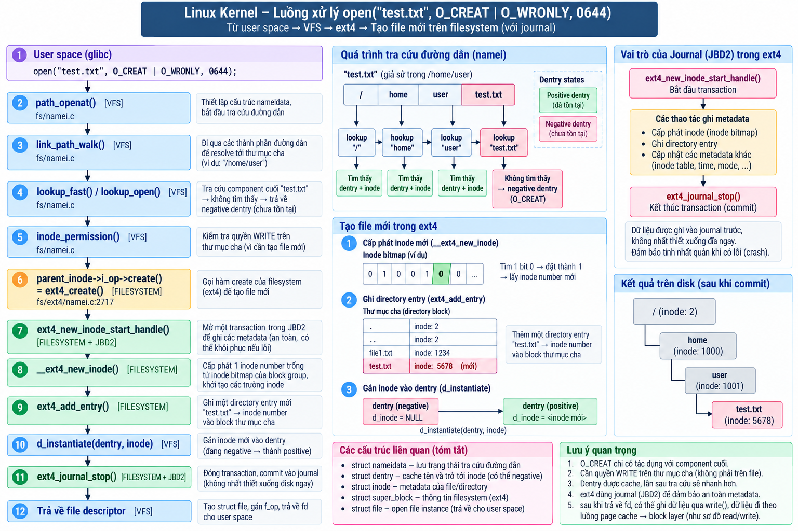
| Phân biệt | inode creation | dentry creation | directory entry |
|---|---|---|---|
| Ý nghĩa | Cấp 1 số inode mới + khởi tạo metadata trong inode table (on-disk, qua __ext4_new_inode) | Object trong RAM ánh xạ tên → inode (qua d_instantiate, chỉ VFS/dcache) | Bản ghi (tên, số inode) ghi vào block dữ liệu của thư mục cha trên disk (qua ext4_add_entry) |
| Ai làm | Filesystem (ext4) | VFS | Filesystem (ext4) |
| Tồn tại ở đâu | Disk (inode table) + inode cache (RAM) | Chỉ RAM (dcache) | Disk (directory block) — chính là thứ ls đọc qua getdents |
unlink()
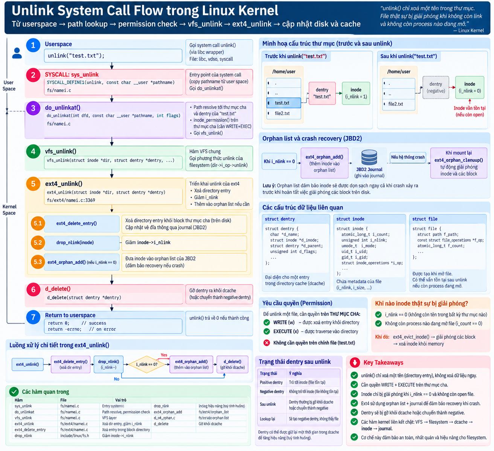
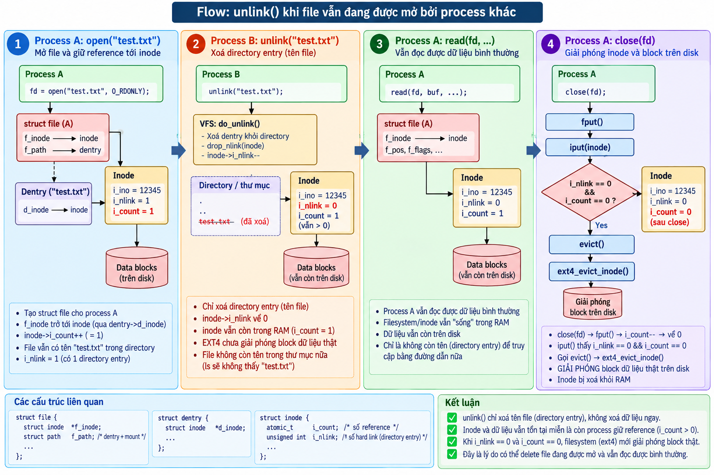
Chuỗi quan hệ:filename → dentry → inode → struct file. unlink() chỉ cắt đứt mắt xích ĐẦU TIÊN
(filename → dentry). Mắt xích dentry(process A) → inode và inode → struct file(process A)
không bị ảnh hưởng, vì chúng được giữ bằng reference count độc lập, không phụ thuộc tên.
$ ./myprog & # process mở 1 file rồi sleep $ ls -li test.txt $ rm test.txt $ ls -li test.txt # báo "No such file" — directory entry đã mất $ df -h . # dung lượng KHÔNG giảm — block chưa giải phóng $ ls -l /proc/<pid>/fd/ # vẫn thấy "test.txt (deleted)" — fd vẫn trỏ inode sống $ kill %1 # process đóng fd → evict_inode() → df giảm ngay
rename()
rename("a.txt", "b.txt");
▼
do_renameat2() fs/namei.c [VFS]
│ resolve CẢ HAI path: old parent+dentry, new parent+dentry
├── lock_rename() khoá CẢ HAI thư mục cha theo thứ tự cố định (tránh deadlock AB-BA) [VFS]
▼
vfs_rename(...) [VFS]
▼
old_dir->i_op->rename(old_dir, old_dentry, new_dir, new_dentry, flags) = ext4_rename2()
fs/ext4/namei.c:4254 [FILESYSTEM]
│
├── nếu new_dentry đã tồn tại (positive): xử lý như unlink ngầm trên "b.txt" cũ trước
├── ext4_add_entry() thêm entry "b.txt" trỏ tới CÙNG inode number
├── ext4_delete_entry() xoá entry "a.txt"
├── nếu là rename qua thư mục khác: cập nhật ".." trong thư mục con (nếu old là dir)
▼
d_move(old_dentry, new_dentry) cập nhật dcache: dentry giữ nguyên, chỉ đổi tên/parent [VFS]
rename() trong cùng 1 filesystem KHÔNG copy dữ liệu — chỉ thao tác trên directory entry (metadata), vì vậy nó là
atomic theo góc nhìn userspace (POSIX đảm bảo: tại mọi thời điểm, "b.txt" hoặc trỏ file cũ hoặc trỏ file mới, không bao giờ
"nửa vời"). d_move() đảm bảo struct dentry trong RAM vẫn là CÙNG MỘT object, chỉ cập nhật d_name/d_parent
— nên fd đang mở của "a.txt" không bị ảnh hưởng, vẫn hoạt động, chỉ là path hiển thị của nó (qua /proc/pid/fd) đổi thành "b.txt".
getdents() / ls
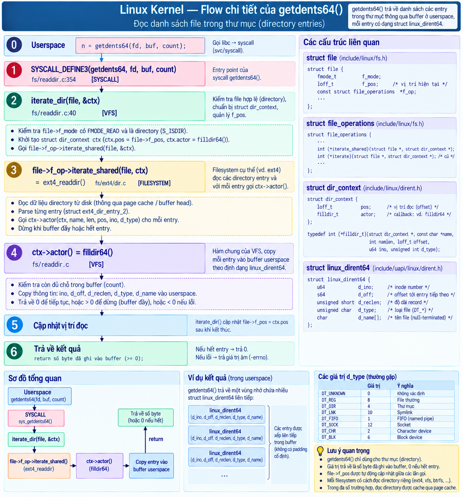
Khác biệt quan trọng với read(): getdents KHÔNG đi qua generic_file_read_iter/page-cache-theo-byte-offset
thông thường — nó dùng cơ chế callback (dir_context.actor) vì cấu trúc thư mục trên disk (entry có độ dài thay đổi) không
map trực tiếp 1-1 với buffer userspace như file thường.
fsync()
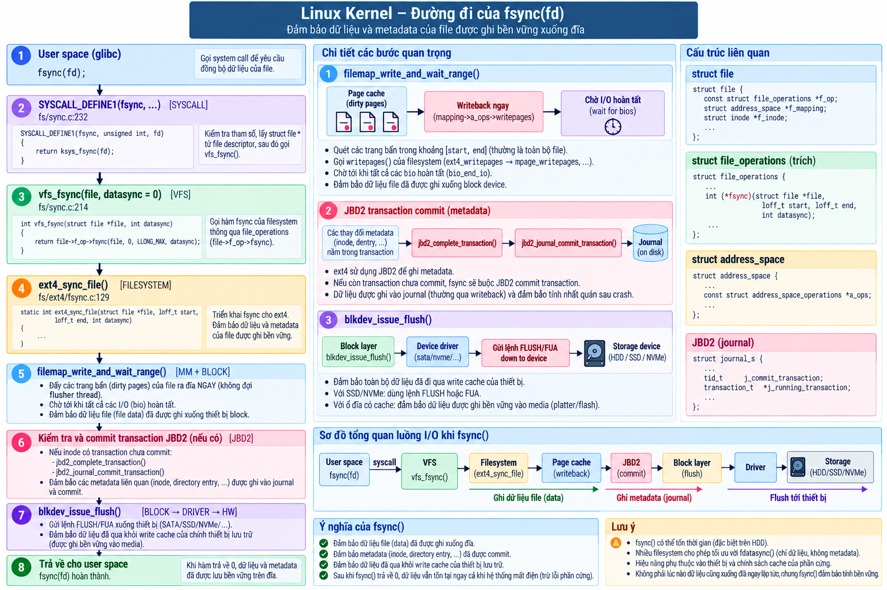
fsync() là điểm nối 3 lớp writeback riêng biệt phải đồng bộ: (1) page cache → disk (data), (2) transaction JBD2 chưa
commit → journal (metadata), (3) write cache của chính ổ cứng/SSD → NAND/platter thật (hardware flush). Thiếu 1 trong 3, dữ liệu
vẫn có thể mất khi mất điện dù ứng dụng đã gọi fsync() — đây là lý do 1 số filesystem/driver phải hỗ trợ đúng lệnh FLUSH.
Page Cache
struct page sang struct folio (hoàn tất ở các bản sau
5.16+). 5.10.241 vẫn chủ yếu dùng struct page trực tiếp; index vào address_space qua xarray
(i_pages) — đây bản thân đã là thay đổi so với radix_tree cũ hơn dùng ở kernel < 4.20.
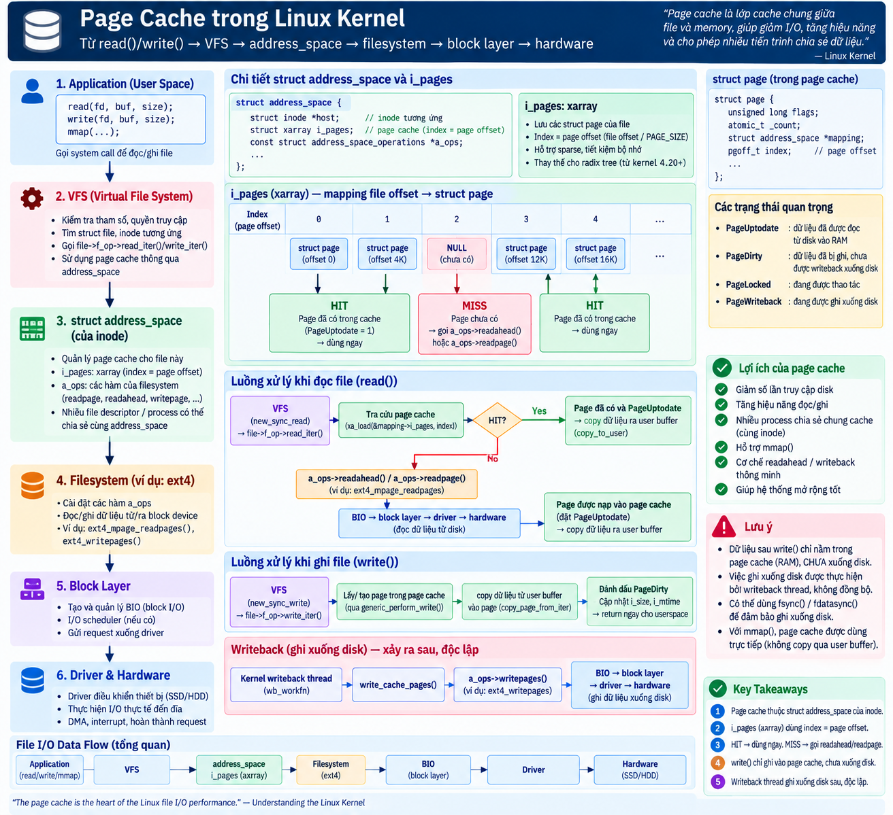
Field struct address_space (verify include/linux/fs.h:458) | Ý nghĩa |
|---|---|
host | Trỏ ngược lại inode sở hữu page cache này |
i_pages | struct xarray — cây lưu con trỏ page* theo index (thay radix_tree_root cũ) |
a_ops | address_space_operations — do filesystem cài (readahead/writepage/write_begin...) |
nrpages | Số trang hiện có trong cache của address_space này |
gfp_mask | Flag cấp phát trang cho address_space này (vd GFP_HIGHUSER_MOVABLE) |
read() VÀ write() VÀ mmap() đều đi qua cùng một address_space của inode — đây là lý do
nếu process A write() rồi process B read() ngay lập tức (chưa writeback), B vẫn thấy dữ liệu mới nhất: cả hai đang
thao tác trên cùng các trang RAM, không phải hai bản sao.
Writeback
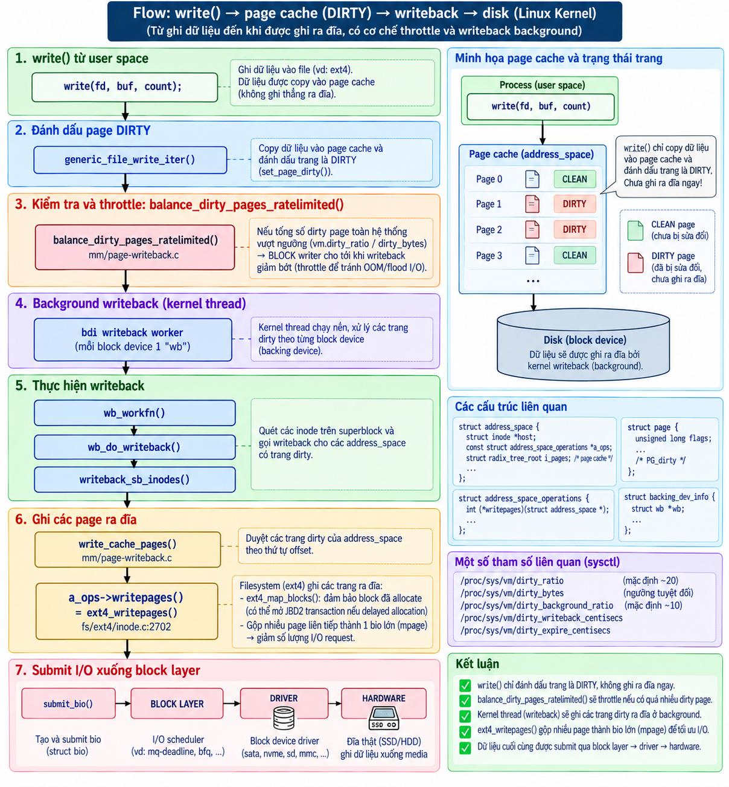
| Hàm | Vai trò |
|---|---|
balance_dirty_pages() | Cơ chế "phanh ngược áp lực" — nếu ghi nhanh hơn disk có thể tiêu hoá, block chính writer để tránh dirty page chiếm hết RAM |
wb_workfn() | Hàm chính của kernel worker thread định kỳ ghi dirty page xuống — chạy độc lập, KHÔNG do syscall nào trực tiếp gọi |
write_cache_pages() | Vòng lặp generic duyệt dirty page trong 1 address_space, gọi callback writepage cho từng trang (hoặc filesystem tự làm việc này trong writepages để gộp I/O hiệu quả hơn) |
fsync()/sync()/
msync() ép ghi ngay. Đây là lý do write() "nhanh" (không đợi disk) nhưng hệ thống vẫn tự bảo vệ khỏi mất dữ liệu quá lâu.
ext4
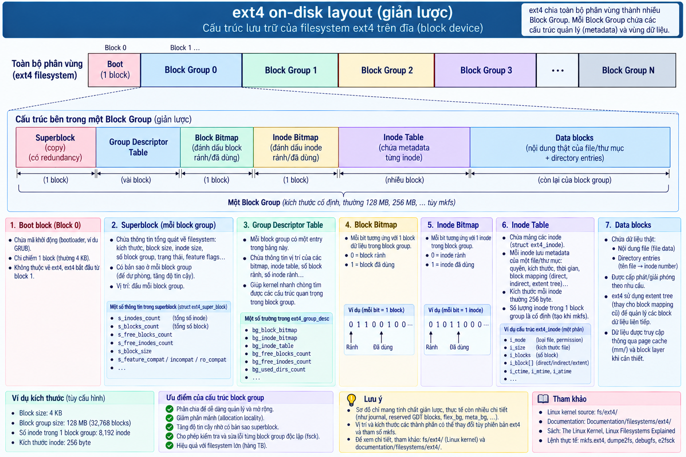
| Khái niệm | Ý nghĩa | Source |
|---|---|---|
| Superblock (ext4) | Metadata toàn filesystem: tổng block, block size, số inode, trạng thái mount — khác struct super_block VFS (VFS super_block bọc lấy dữ liệu này qua ext4_fill_super) | fs/ext4/super.c |
| Block group | Chia disk thành các vùng nhỏ, mỗi vùng tự quản lý bitmap/inode table riêng — giảm phân mảnh, tăng locality | fs/ext4/balloc.c, ialloc.c |
| Inode table | Mảng các struct ext4_inode on-disk — inode number = index vào bảng này (offset theo block group) | fs/ext4/ialloc.c |
| Extent | Thay vì con trỏ block rời rạc (kiểu ext2 cũ), ext4 dùng extent tree: 1 extent mô tả 1 dải block liên tiếp (logical_start, length, physical_start) — hiệu quả hơn nhiều cho file lớn liên tục | fs/ext4/extents.c, ext4_extents.h |
| Directory | Nội dung là danh sách (tên, inode_number, file_type), có thể dùng HTree (hash B-tree) nếu thư mục lớn để lookup nhanh O(log n) | fs/ext4/dir.c, namei.c |
| Journal | Vùng riêng (hoặc file ẩn) ghi log các thay đổi metadata TRƯỚC khi ghi thật — xem chương 23 | fs/jbd2/ |
- Purpose
- Hàm trung tâm dịch
(inode, logical block number)→physical block numbertrên disk, dùng chung cho cả đường đọc lẫn ghi. Đi qua extent tree (ext4_ext_map_blocks) để tìm hoặc cấp phát extent phù hợp. - Caller
ext4_mpage_readpages()(đọc),ext4_writepages()(ghi),ext4_getblk().- Important structs
struct ext4_map_blocks(input/output: logical block, length, flag),struct ext4_extent(1 node của extent tree).- Next step
- Có physical block → xây
struct biotrỏ đúng sector,submit_bio().
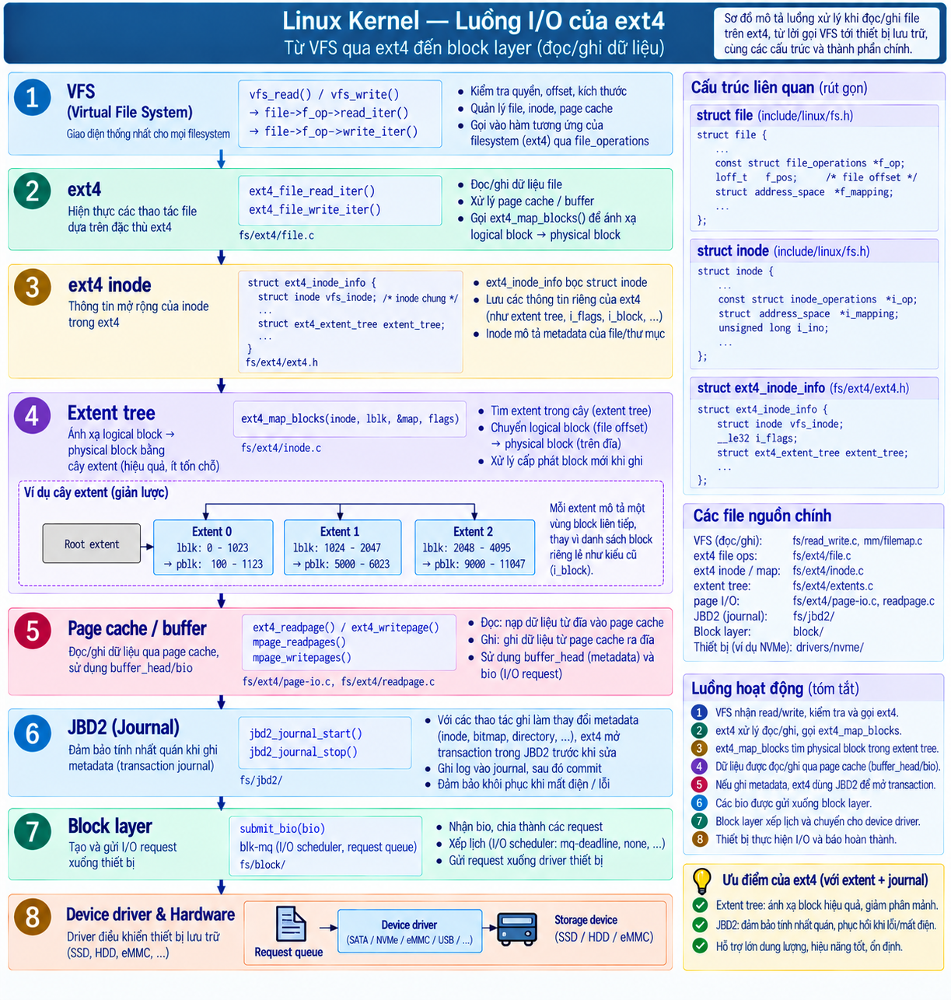
JBD2 — Journaling
JBD2 (Journaling Block Device v2) giải quyết bài toán metadata consistency khi crash giữa chừng: một thao tác như
create() cần sửa NHIỀU block khác nhau (inode bitmap, inode table, directory block) — nếu crash sau khi ghi block 1
nhưng trước block 2, filesystem rơi vào trạng thái không nhất quán. JBD2 buộc mọi thay đổi metadata phải ghi vào journal
(log tuần tự, ghi nhanh) trước, rồi mới "checkpoint" (ghi thật) vào vị trí cuối cùng — nếu crash giữa chừng, lần mount sau
replay journal để hoàn tất hoặc rollback toàn bộ transaction, không bao giờ để lại trạng thái nửa vời.
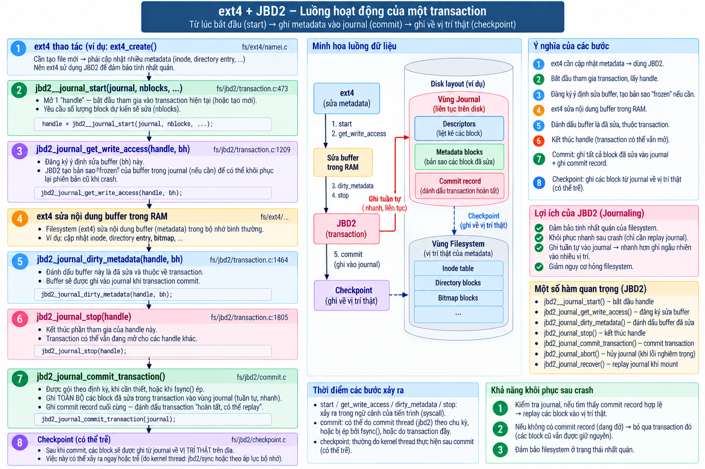
Block Layer
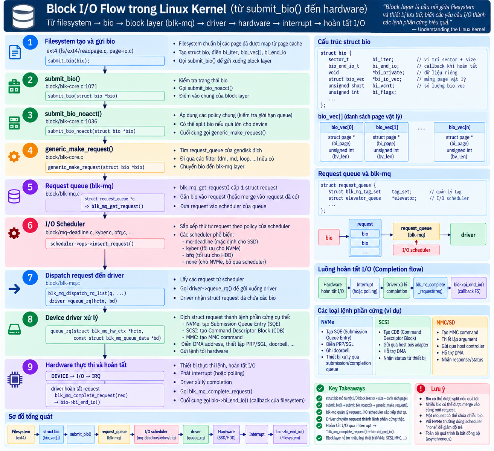
| So sánh | struct page | struct bio | struct request |
|---|---|---|---|
| Tầng | MM / Page cache | Block layer (submit) | Block layer (sau khi vào queue, có thể gộp nhiều bio) |
| Đơn vị | 1 trang RAM (thường 4KB) | 1 yêu cầu I/O — có thể gồm nhiều trang không liên tục trong RAM nhưng liên tục trên disk (bio_vec[]) | 1 hoặc nhiều bio đã gộp (merge), sẵn sàng gửi tới driver |
| Biết gì về file? | Có (qua page->mapping) | Không — chỉ biết sector + buffer RAM | Không |
| Struct verify | — | include/linux/blk_types.h:203 | include/linux/blkdev.h |
submit_bio(), mọi ngữ cảnh filesystem (inode nào, offset nào trong file nào) biến mất khỏi tầm nhìn
của block layer — block layer chỉ thấy (sector, length, buffer). Đây chính là ranh giới cho phép cùng 1 block layer phục vụ
ext4, xfs, btrfs, hay raw disk access — nó hoàn toàn filesystem-agnostic.
Device Driver
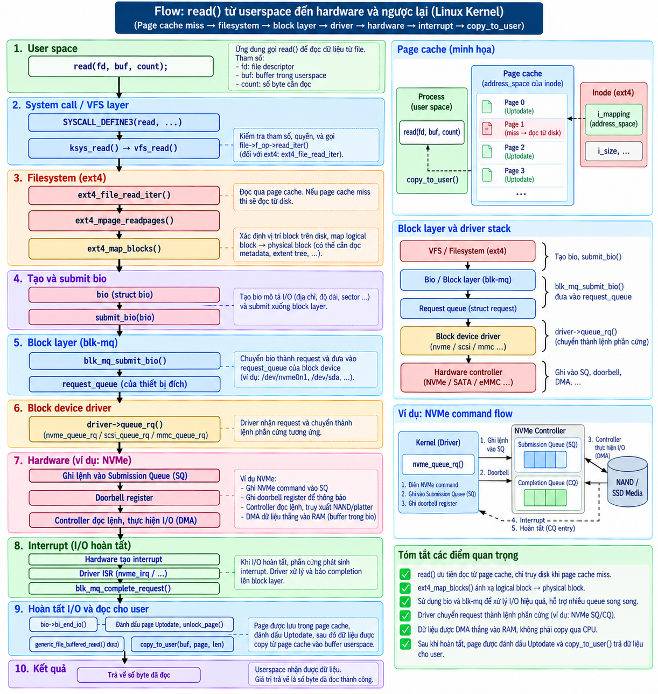
bio_vec của bio); bước
cuối cùng chỉ là copy_to_user() từ trang đó (kernel space) sang buffer thật của process (user space) — đây là copy duy nhất
trong toàn bộ hành trình (trừ khi dùng O_DIRECT, lúc đó bỏ qua page cache, DMA thẳng vào buffer user luôn).
procfs — filesystem không có disk
s_bdev nào cả. VFS layer (dentry/inode/file) vẫn hoạt động y hệt; điều khác biệt duy nhất nằm ở a_ops/f_op:
thay vì đọc block từ disk, hàm read của chúng sinh dữ liệu ngay tại chỗ từ kernel state đang có trong RAM.
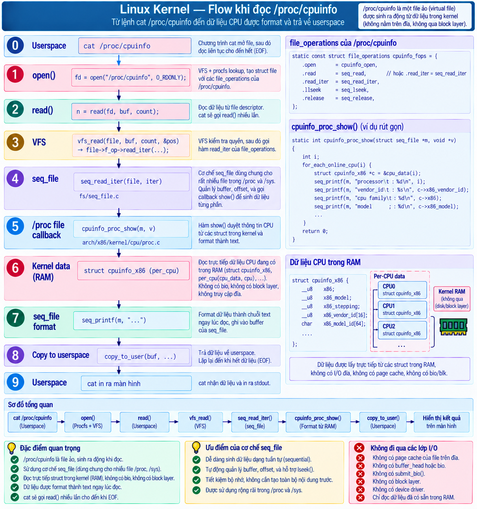
read() là một lần tính toán lại nội dung từ trạng thái kernel hiện tại. Đây là lý do
cat /proc/meminfo hai lần liên tiếp có thể ra số khác nhau ngay lập tức — không có "file cũ" nào bị cache.
sysfs
sysfs (/sys/class/...) là "bề mặt" trực quan hoá device model (struct kobject/struct device)
ra thành cây thư mục. Nó được cài đặt trên nền kernfs — một framework pseudo-filesystem dùng chung, tách phần "VFS glue"
(kernfs) khỏi phần "biết ý nghĩa dữ liệu" (sysfs attribute show/store callback).
- Purpose
- Hàm
read_iterchung cho MỌI file sysfs — gọi ngược vàokernfs_ops->seq_show(thường là sysfs attribute's->show()) để sinh nội dung text từ trạng thái device thật trong RAM, rồi copy ra userspace. - Data flow
- Không có disk, không có page cache theo nghĩa file thường — nội dung sinh động (ephemeral) mỗi lần đọc.
tmpfs
tmpfs (nền tảng cho /dev/shm, hầu hết /tmp hiện đại) là filesystem sống hoàn toàn trong page cache —
implementation nằm ở mm/shmem.c, không phải fs/, vì bản chất nó gần với quản lý bộ nhớ hơn là filesystem thật.
->writepage() ghi xuống disk thật — shmem_writepage() chỉ swap-out nếu áp lực bộ nhớ, không phải writeback bình thường.
overlayfs
overlayfs (nền tảng container image layer — Docker/containerd) ghép 2+ filesystem thành 1 view thống nhất: lowerdir (read-only, có thể nhiều lớp chồng) + upperdir (read-write) + workdir (vùng làm việc nội bộ).
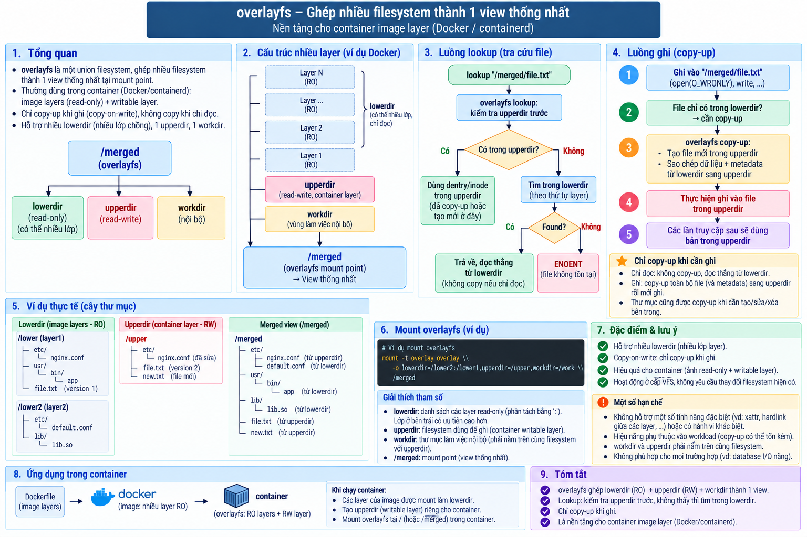
Debugging + Hands-on Labs
| Công cụ | Dùng để | Lệnh mẫu |
|---|---|---|
strace | Xem syscall + tham số + kết quả (userspace boundary) | strace -e trace=openat,read,write ./test |
ftrace | Trace function call bên trong kernel (function/function_graph tracer) | echo function_graph > /sys/kernel/debug/tracing/current_tracer |
trace-cmd | Frontend tiện lợi cho ftrace, ghi/replay trace session | trace-cmd record -p function_graph -g vfs_read ./test |
perf | Profiling (sampling), đo hotpath thật sự tốn CPU/thời gian | perf record -e block:block_rq_issue -a |
printk/dynamic_debug | Log tường minh trong source, bật/tắt theo file:line không cần recompile | echo 'file namei.c +p' > /sys/kernel/debug/dynamic_debug/control |
bpftrace | Trace động, không cần patch kernel, dùng cho production | bpftrace -e 'kprobe:vfs_read { printf("%s\n", comm); }' |
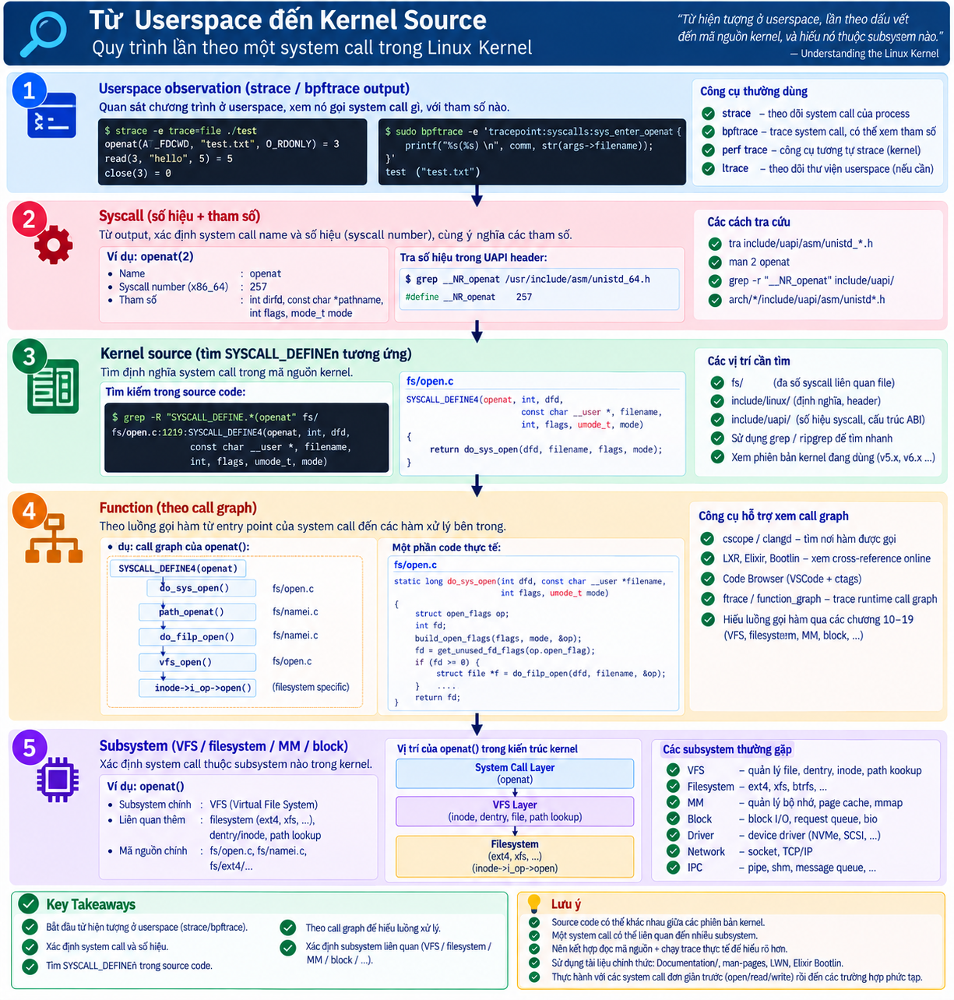
12 Labs
Lab 1 — open file
open().Command:
strace -e trace=openat -f -- cat /etc/hostnameExpected: Thấy
openat(AT_FDCWD, "/etc/hostname", O_RDONLY) = 3Syscalls:
openat · Kernel functions: do_sys_openat2 → do_filp_open → path_openat (xem ch.10)Source files: fs/open.c, fs/namei.c
Questions: Vì sao
strace hiện openat ngay cả khi chương trình gọi hàm libc open()?
Lab 2 — read file (quan sát cache hit/miss)
Command:
echo 3 > /proc/sys/vm/drop_caches; time cat bigfile > /dev/null; time cat bigfile > /dev/nullExpected: Lần 2 nhanh hơn đáng kể — page cache hit.
Kernel functions:
generic_file_buffered_read() (xem ch.11)Observe:
vmstat 1 cột bi (block in) chỉ tăng ở lần 1.
Lab 3 — write file (quan sát writeback trễ)
Lab 4 — create file
Command:
strace -e trace=openat touch newfile.txtKernel functions:
ext4_create → __ext4_new_inode → ext4_add_entry (xem ch.15)
Lab 5 — unlink file (deleted but in use)
Lab 6 — rename file
strace -e trace=renameat2 mv a.txt b.txtKernel functions:
do_renameat2 → vfs_rename → ext4_rename2 (xem ch.17)
Lab 7 — mmap file
Command: viết chương trình nhỏ
mmap() rồi đọc 1 byte, chạy với strace -e trace=mmap,openat, quan sát /proc/<pid>/smaps.Kernel functions:
do_mmap → filemap_fault (xem ch.13)
Lab 8 — mount filesystem
strace -f mount -t tmpfs tmpfs /mntKernel functions:
do_mount → do_new_mount → vfs_get_tree (xem ch.08)
Lab 9 — fsync
strace -e trace=write,fsync -T ./test_fsync — so sánh thời gian write (nhanh) vs fsync (chậm hơn hẳn, cột <seconds> cuối dòng strace).Kernel functions: xem chương 19
Lab 10 — inspect /proc
strace -e trace=openat,read cat /proc/cpuinfo — không thấy syscall block I/O nào cả.Xem chương 26.
Lab 11 — inspect /sys
cat /sys/class/net/eth0/mtu, thử echo để đổi giá trị (nếu có quyền) — quan sát effect ngay lập tức trên trạng thái kernel thật.Xem chương 27.
Lab 12 — inspect /dev
ls -l /dev/sda; stat /dev/sda — chú ý major/minor number (i_rdev) thay vì kích thước file thật.Discuss: device node trong
/dev chỉ là 1 dentry+inode đặc biệt (S_ISBLK) — open() nó KHÔNG đi qua filesystem chứa dữ liệu, mà đi thẳng vào def_blk_fops rồi tới driver của chính block device đó (khác hẳn open 1 file thường trên ext4 nằm TRÊN device này).
Complete Mental Model
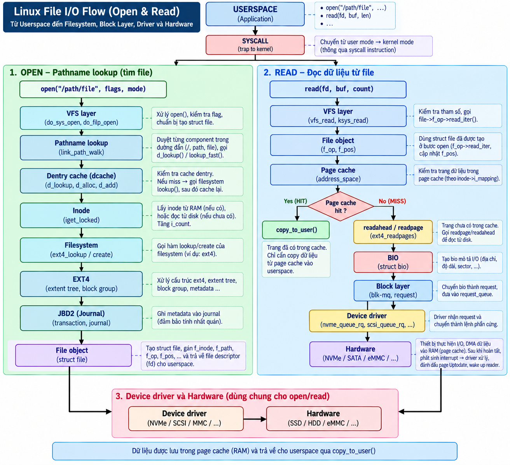
read("/home/test.txt") từ đầu đến cuối- Nếu chưa có fd:
open()→do_filp_open→path_openat→link_path_walkresolve từng component qua dcache (lookup_fast/d_lookup), cache miss thì hỏi ext4 quaext4_lookup → iget_lockednạp inode từ inode table → tạostruct file, gắnf_op = ext4_file_operations, trảfd. read(fd, buf, 4096):vfs_read → ext4_file_read_iter → generic_file_read_iter → generic_file_buffered_read.- Tra
address_space->i_pagescủa inode này ở offset tương ứng. - Cache HIT: trang đã
Uptodate→copy_page_to_iter → copy_to_user. Xong, không chạm block layer. - Cache MISS: gọi
ext4_mpage_readpages → ext4_map_blocksđi qua extent tree dịch logical block → physical block trên disk → dựngbiotrỏ đúng sector →submit_bio. - Block layer:
submit_bio_noacct→ vàorequest_queue(blk-mq), có thể merge với request khác đang chờ, I/O scheduler sắp xếp thứ tự. - Driver:
queue_rq()dịch thành lệnh NVMe/SCSI/MMC thật, ghi vào submission queue của controller. - Hardware: controller đọc NAND/platter, DMA thẳng dữ liệu vào trang RAM đã cấp sẵn trong
bio_vec. - Interrupt: driver ISR →
blk_mq_complete_request→bio->bi_end_io→ đánh dấu trangUptodate,unlock_page, đánh thức reader đang chờ tronggeneric_file_buffered_read. - Copy cuối cùng:
copy_page_to_iter → copy_to_user— đây là lần copy DUY NHẤT trong toàn hành trình.
| VFS | Object model + dispatch qua con trỏ hàm, filesystem-agnostic |
| Filesystem (ext4) | Dịch (inode, offset logic) ↔ (block group, extent, block vật lý thật trên disk) |
| Page cache | Cache nội dung theo trang RAM, che giấu độ trễ disk khỏi read/write path |
| Block layer | Gộp/xếp hàng I/O theo sector, filesystem-agnostic, driver-agnostic |
| Driver | Dịch request generic thành lệnh phần cứng cụ thể của 1 loại thiết bị |
— Hết. Toàn bộ function name/struct field/call graph trong tài liệu này đã verify trực tiếp bằng grep trên source thật Linux 5.10.241 tại Kernel/K-S800/Src/. —